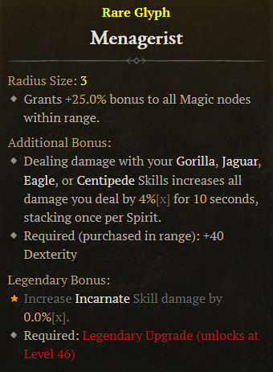
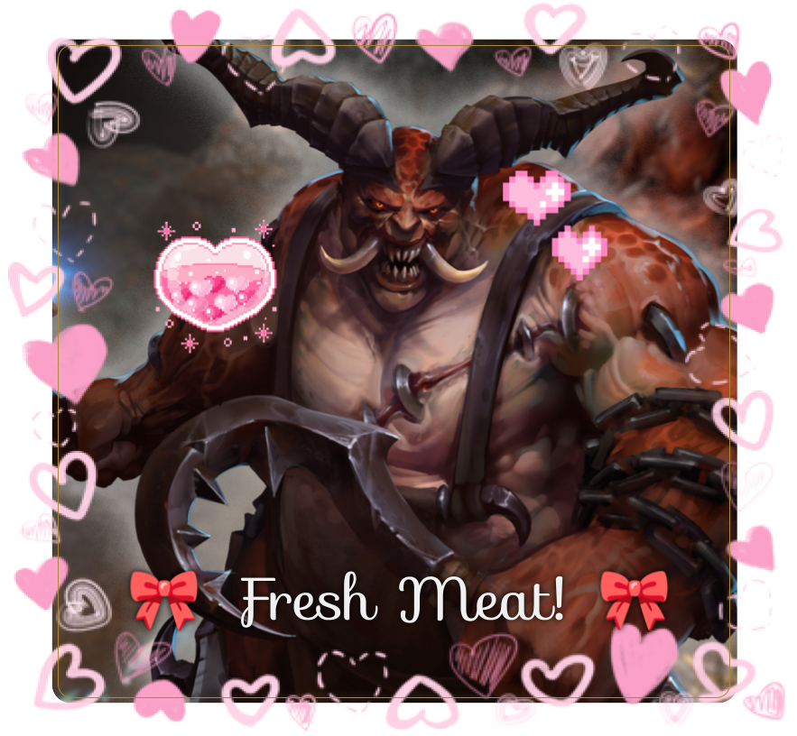

One of my Spiritborn glyphs!
My role:
Class Design Intern
June 2024 - September 2024 (4 Months)
- Scripted with Lua in Diablo IV’s proprietary engine.
- Created 3 skills from paper design to release for the Spiritborn class.
- Prototyped multiple Witchcraft powers for Season 7.
- Collaborated with other departments and worked around interdisciplinary constraints.
- Organized playtests and iterated on prototypes based on feedback.
- Fixed bugs and kept track of assigned tasks utilizing Jira.
- Produced comprehensive living game design documents using Miro.
Season 7 Witchcraft Powers
UNDER CONSTRUCTION!

"COME BACK LATER!!!"